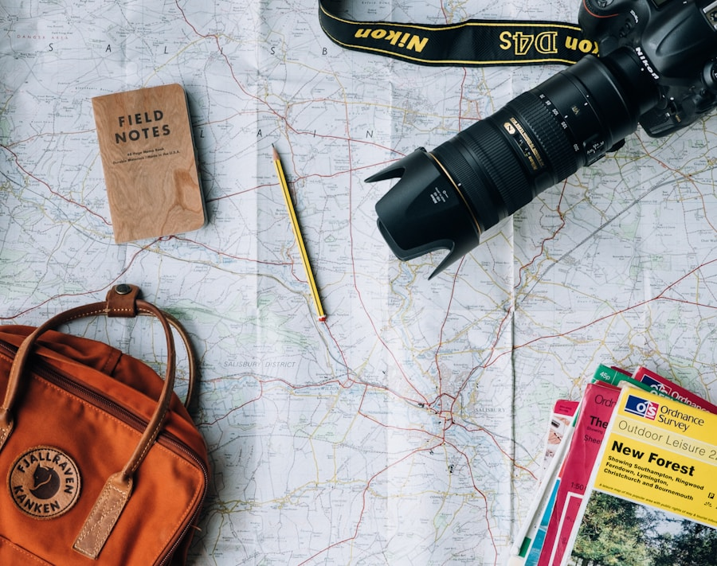

Des endroits calmes, cadrés lentement
Workation au bout du monde — îles Féroé et Islande, trois mois chacune, appareil photo toujours à portée.
Workation & Vie à distance
Le principe du workation est simple : travailler depuis un endroit qui inspire, et laisser cet endroit s’infiltrer dans le quotidien. J’ai passé trois mois en télétravail aux îles Féroé et trois mois en Islande en hiver — non pas en touriste, mais en résident qui se trouve avoir un appareil photo et une deadline.
Vivre dans ces endroits plutôt que les visiter change tout. On photographie l’ordinaire — la lumière du matin sur un fjord, la même route sous trois temps différents, un phoque qui vous observe avec une parfaite indifférence depuis le rivage. Peu à peu, l’extraordinaire devient familier, et le familier vaut la peine d’être photographié.


Islande — Un séjour singulier
Le séjour en Islande était d’une nature différente des Féroé — plus proche d’une retraite spirituelle. Un chalet isolé mais confortable, loin de tout village, avec pour tout horizon des champs de lave, de la vapeur géothermique et le ciel nocturne. Travail pendant les rares heures de lumière, promenade au crépuscule, photographies à l’aube et au coucher d’un jour très court.
Le silence y a une texture. On cesse étonnamment vite de regretter la ville.
Catravel / Chatourisme
Un projet qui prend forme doucement en coulisses : un guide de voyage pour les amoureux des chats. Catravel en anglais, Chatourisme en français. Un livre sur les destinations, les cafés, les refuges, les îles connues pour leurs chats, et la façon particulière dont les félins habitent les villes et les paysages. Plus de détails quand il sera prêt.